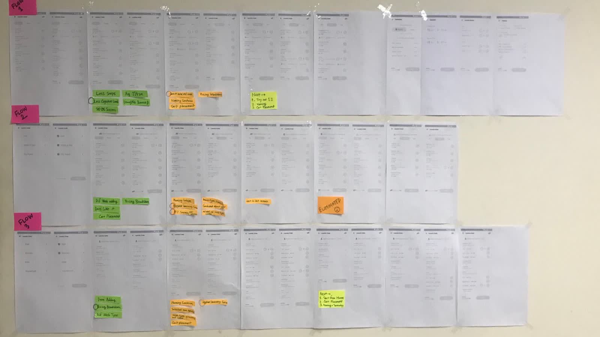
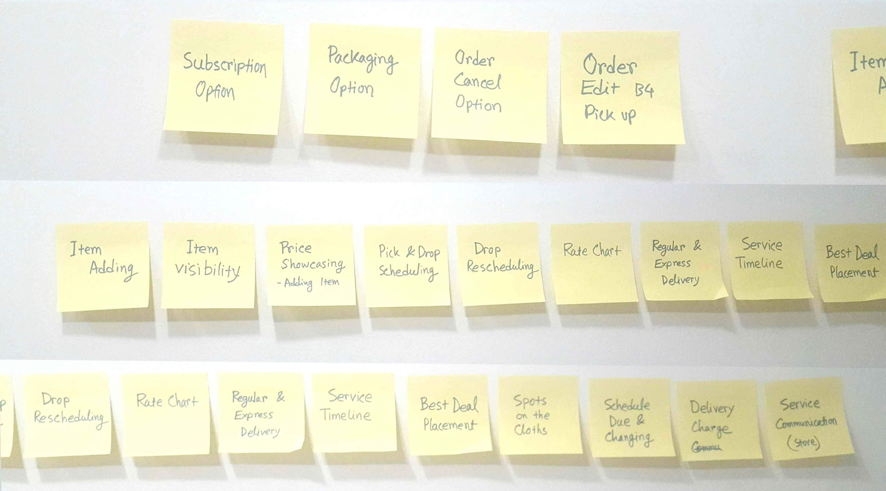
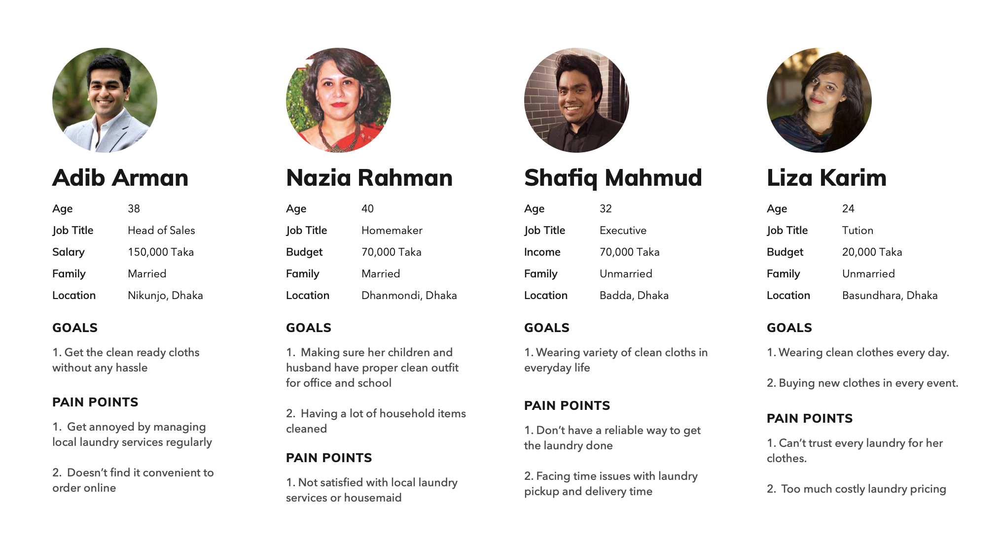
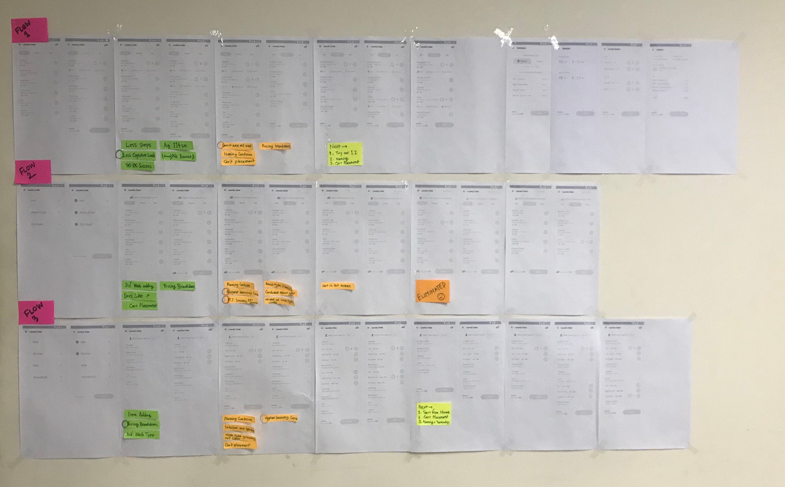
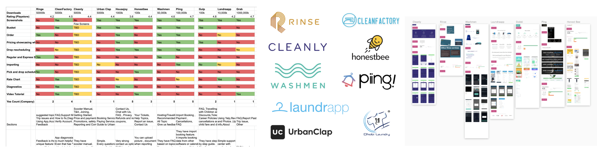
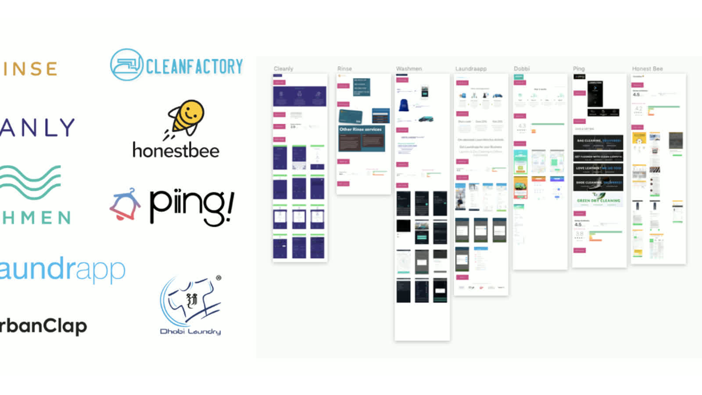
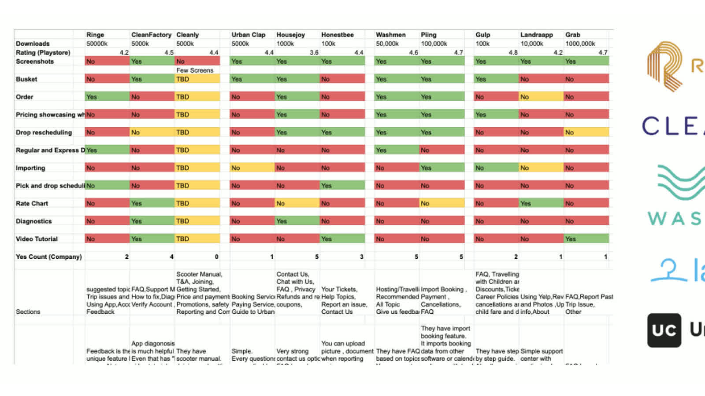

Journey Simplification
Reduced back-and-forth in ordering sequence and clarified progression so users could complete tasks with less uncertainty.
Case Study
Turning an over-complicated service-order flow into a clearer, test-validated journey for scale.
At Sheba.xyz, laundry was a high-demand service running on a flow originally built for a different operational model. My role was to structure the order experience through research, iterative testing, and decision-making that balanced user clarity with business and technical constraints.

Context
Sheba.xyz was scaling rapidly across 90+ lifestyle services in Bangladesh, and laundry became one of the most frequently used. The existing flow was built in 2017 and no longer matched current service complexity, user expectations, or operational load.
By 2019, support involvement and complaints had increased. The product question was no longer about polishing screens; it was about building an ordering structure that could support growth while keeping decision-making simple for users.
The Problem
Laundry had different operational logic from other service categories, but users were forced through a shared generic flow. That created confusion in action sequencing, information access, and order completion confidence.
The team anchored on one core framing question: how might we help users place laundry orders seamlessly while preserving business feasibility?
Complexity
This work involved complexity across:
Strategic Approach


Solution Logic
Instead of redesigning one screen set, I treated the project as a system-level order-journey problem. The team prioritized two areas: reduce interaction complexity and increase information visibility at the exact decision moments.
Reduced back-and-forth in ordering sequence and clarified progression so users could complete tasks with less uncertainty.
Brought pricing and category understanding forward to improve discoverability and confidence before commitment.
Used iterative prototype evidence to converge on Version 2 as the best tradeoff between usability and implementation scope.



Outcomes
The outcome was not just a better flow variant. More importantly, the project introduced a repeatable, evidence-driven design process into the organization and improved stakeholder confidence in user-centered product decisions.
Prototype references: Version 1, Version 2, Version 3.

Reflection
This project reinforced a practical leadership lesson: in service products, clarity is created through structure and validation, not through visual polish alone.
Testing early with mid-fidelity prototypes accelerated decision quality, improved stakeholder trust, and reduced downstream design risk. The strongest long-term outcome was process maturity, not just the final interface.